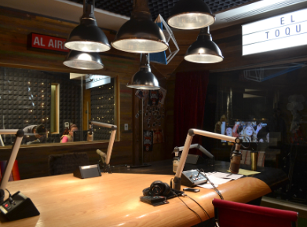
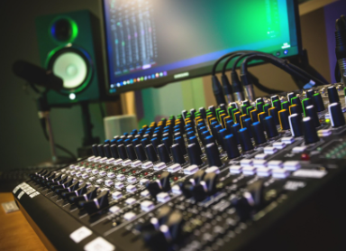
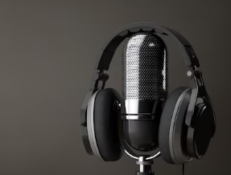
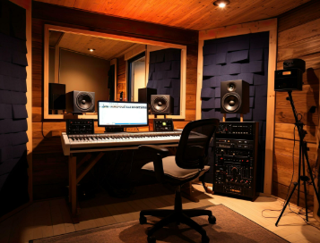

Una nueva conversación.
PERFIL FICTICIO
Voz Aurora
Conversación cercana para comenzar el día y compartir la tarde.
SONIDOS, HISTORIAS Y BUENA COMPAÑÍA
Una experiencia de radio pensada para descubrir programas, acompañar tu día y abrir espacio a nuevas voces.

PONTE EN SINTONÍA
Una secuencia instrumental generada en tu navegador para probar los controles del reproductor.
Audio de demostración independiente de la programación. No es una transmisión en vivo y no se reproduce automáticamente.
CADA MOMENTO TIENE SU ESPACIO
Explora la semana y guarda los programas que te gustaría volver a encontrar.
Horarios de Ciudad de México. Programas y nombres ficticios.
PERSONALIDAD EN CADA ESPACIO
Perfiles de demostración para mostrar cómo presentar al equipo de una estación.
Conversación cercana para comenzar el día y compartir la tarde.

Selección, ritmo y continuidad para acompañar cada bloque.

Una identidad de muestra para los espacios de noche y madrugada.
LA AUDIENCIA TAMBIÉN TIENE VOZ
Elige entre opciones ficticias y observa cómo llega una solicitud al panel de cabina.
EL OTRO LADO DE LA INTERACCIÓN
Controles abiertos para probar el recorrido. Los cambios de estado son simulados y no implican que una canción haya sido transmitida. Una versión real puede incorporar acceso para el equipo.
MÁS ALLÁ DEL REPRODUCTOR
Ejemplos de publicaciones para presentar novedades, proyectos y contenidos de la estación.

TU ESTACIÓN MERECE SU PROPIO ESPACIO
Reproductor, programación, equipo y participación adaptados a la identidad de tu proyecto.